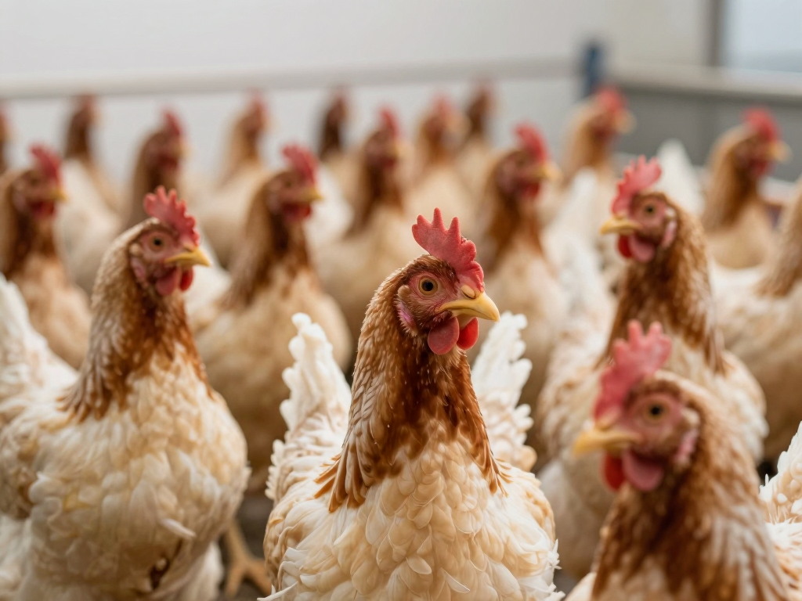

硬組織利用強化蛋殼品質與骨骼支撐
生長線提升胸肉率與料肉比
蛋殼破損與肉雞胸肉率，直接影響出欄收益
以下數字為產業宣稱 / 田間案例參考，非受控實驗室保證。

兩步放大稀釋，確保均勻混合
取少量全價飼料（約 5–10 倍量），與活力得®充分混勻，製成預混料。
將預混料加入當批全量飼料，充分攪拌。1 公斤兌入 1 噸全價飼料，2 次放大稀釋確保均勻。
避免直接倒入大批飼料；勿超量使用；存放陰涼乾燥處。
| 物種 / 階段 | 建議添加量 | 使用時段 |
|---|---|---|
| 蛋雞 | 300–500 g / 噸飼料 | 產蛋期全段 |
| 肉雞 | 300–400 g / 噸飼料 | 育成至出欄 |